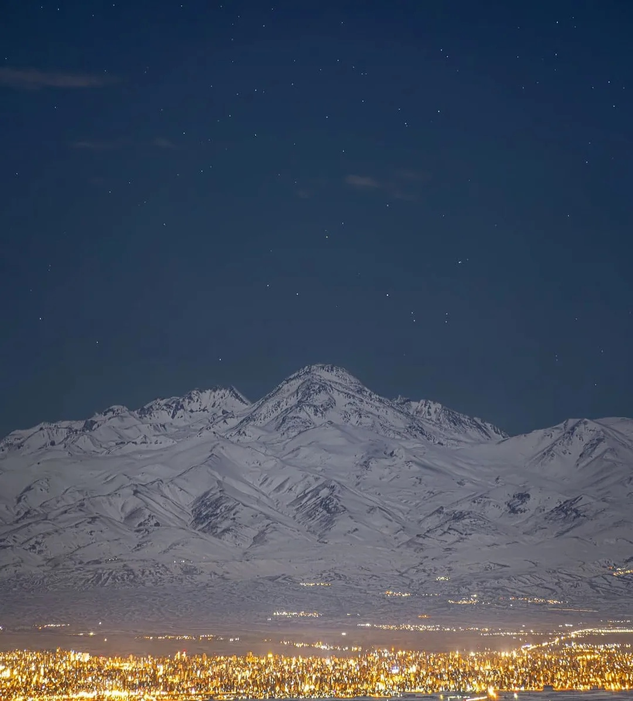
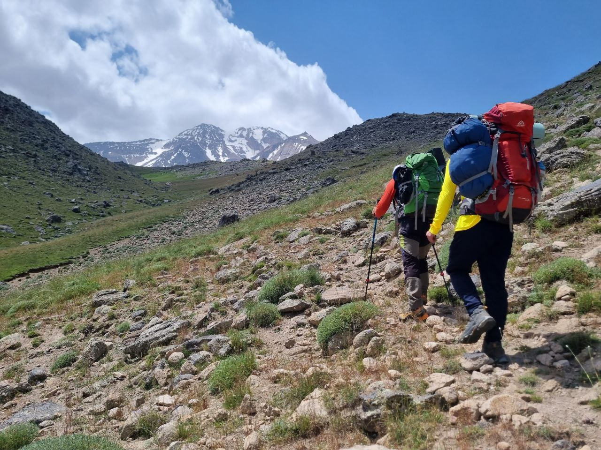
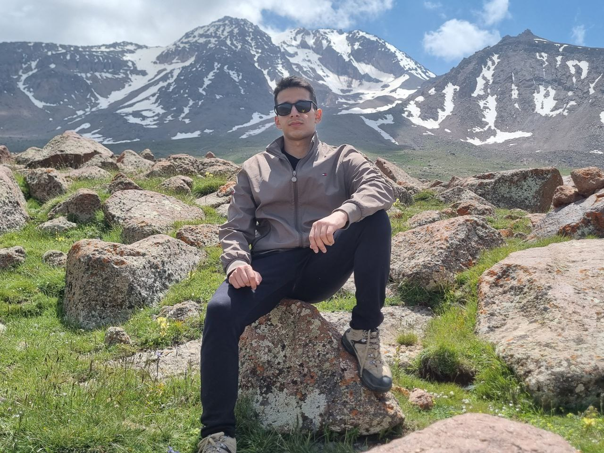
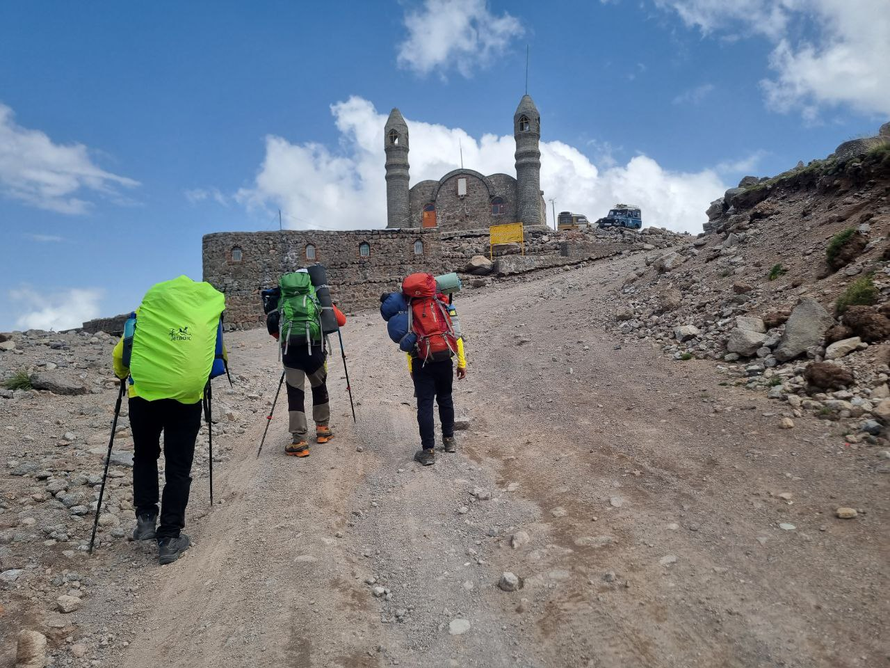
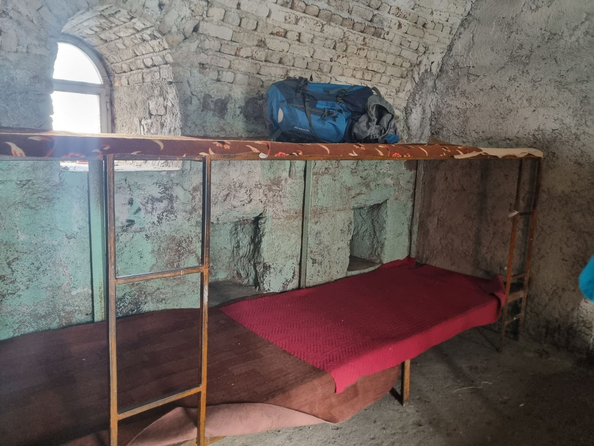
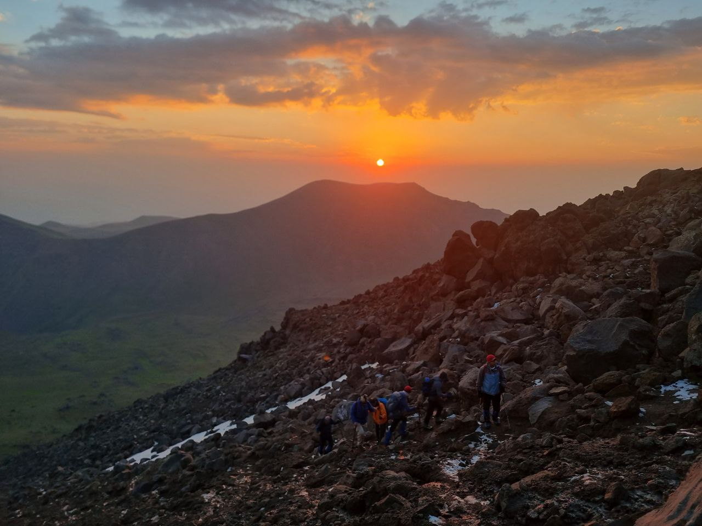
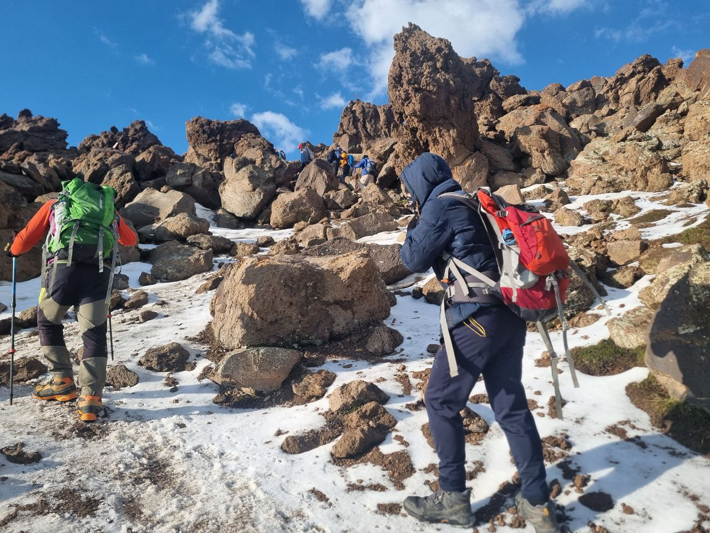
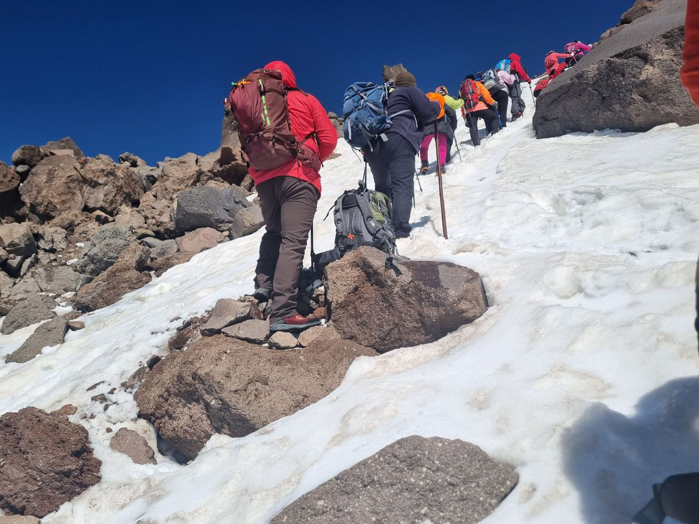
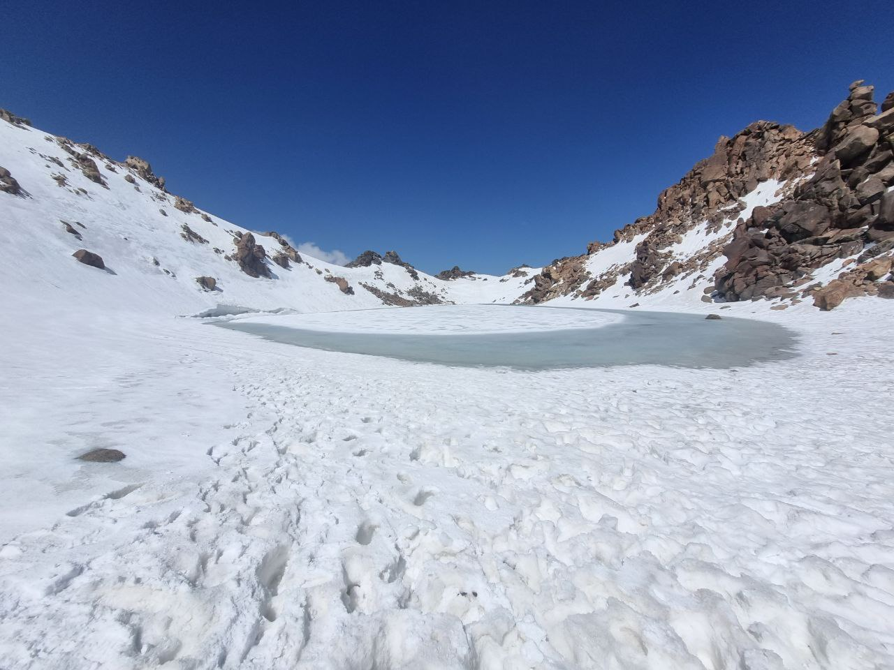

Summiting Sabalan
As an amateur hiker, my experience in serious hiking was almost non-existent. While I used to go on small hikes with my dad when I was little, my first real challenge came just a couple of months ago when I hiked to Dorfak at 2,700 meters. Most hikes require an excellent cardiovascular system rather than specific techniques, and I believed I was fit enough for the task.
Sabalan stands as the third tallest mountain in Iran, after Alam-Kuh and Damavand, reaching a majestic height of 4,811 meters. Remarkably, it is the 66th tallest mountain in the world based on its prominence, boasting around 3,100 meters. It's also worth noting that Sabalan is even higher than Mont Blanc, the highest mountain in Europe. Located in northwest Iran, Sabalan features an outstanding, almost year-round frozen lake at its summit. Given its volcanic nature, there are numerous hot springs scattered around it.

My adventure began in Mashhad, where I reside. I had to meet my hiking group in Tehran, so I took a 1.5-hour flight from Mashhad to Tehran. From there, our group boarded a bus to Ardabil. Upon arriving in Ardabil, we had a delightful breakfast at a cosy, classic café. The local honey and sarshir, paired with traditional bread, gave us the energy needed for the journey ahead. Next, we took a cab from Ardabil to Shabil, a two-hour drive, where we officially started our hike at an altitude of 1,100 meters.
The initial part of our trek took about four hours to reach the first shelter. This segment of the hike traversed grassy grounds and was not particularly steep. For me, this was the most enjoyable part of the trip. There is an extremely rough track through the mountain to the shelter that only some Land Rovers can navigate, but we opted to walk.


Around 2 PM, we arrived at the first shelter, located at a height of 3,700 meters. Initially, we planned to camp and sleep in our tents. However, a storm rolled in around 6 PM, and there had been recent sightings of bears in the area. These factors convinced us to retreat to the shelter for the night — a decision none of us regretted. Around 9 PM, I was walking around the shelter when I saw two bears about 15 meters away. I hurried back to the shelter and notified the others. Apparently, these bears are accustomed to hikers and won't attack unless provoked.
That night was extremely cold, and I didn't have proper clothing. Even inside my sleeping bag, the chill was unbearable. A fellow hiker from another group named Muslim lent me his jacket, which allowed me to make it through the night.


The next day, we woke up around 3:30 AM and were ready to start the final leg of our journey by 4:30 AM. We had been warned that a storm was expected to start around 2 to 3 PM, so we aimed to summit and descend before it hit. It took us about five hours to reach the peak. The path was extremely steep and icy, with some sections covered in 40 cm of snow, which slowed our progress.



Finally, around 10:30 AM, we reached the summit. The view was breathtaking, with the frozen lake at the top adding to the surreal beauty. Though frozen now, I've heard that some brave souls swim in it when it's not iced over. The lake is about 15 meters deep with acidic water, so no fish or plants live in it.

After a brief rest at the summit, we began our descent. It took us about three hours to return to the shelter. From there, we took a Land Rover back to the base. Once at the base, we visited the Shabil hot spring and soaked for almost an hour — a highly recommended treat after such a tough climb. We then took a cab back to Ardabil, where I had three delightful hours exploring the city. The city centre was bustling with people due to the Moharram festivities. In brief, this was a hell of an experience and has motivated me for more experiences like this!